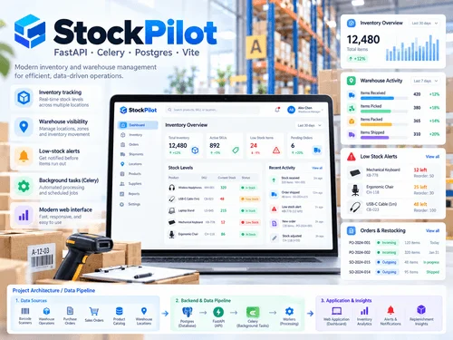
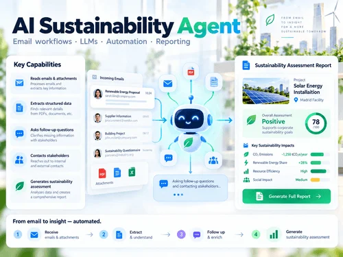

StockPilot

Desarrollo de una aplicación para la gestión de inventario y la planificación de compras, utilizando Python, FastAPI, PostgreSQL, Redis, Celery y React.
Ver proyecto StockpilotLaura Poveda Nicolás
Estudiante de Ingeniería Matemática e Ingeniería Informática, interesada en el desarrollo de software y la inteligencia artificial.
Soy estudiante de un doble grado en Ingeniería Matemática aplicada al Análisis de Datos e Ingeniería Informática en la Universidad Europea. Me interesa especialmente el desarrollo de software, la inteligencia artificial y la creación de soluciones tecnológicas para problemas reales.
Durante mi formación he trabajado en proyectos de programación, análisis de datos y machine learning. También he tenido la oportunidad de desarrollar un agente de inteligencia artificial para automatizar procesos empresariales durante mis prácticas en ACCIONA, una experiencia que reforzó mi interés por la ingeniería de software.
| Centro | Titulación | Años |
|---|---|---|
| Universidad Europea | Doble Grado en Ingeniería Matemática aplicada al Análisis de Datos e Ingeniería Informática | 2022 - 2027 |
| Formación en curso. Graduación prevista para junio de 2027. | ||

Desarrollo de una aplicación para la gestión de inventario y la planificación de compras, utilizando Python, FastAPI, PostgreSQL, Redis, Celery y React.
Ver proyecto Stockpilot
Desarrollo de un agente de inteligencia artificial capaz de procesar correos electrónicos, extraer información, gestionar conversaciones y generar informes automáticamente, utilizando LLMs, n8n y Microsoft Graph API.
Ver proyecto Agente de inteligencia artificial.Integración y análisis de datos relacionados con accidentes, radares y tráfico en Madrid. Desarrollo de una base de datos MySQL, una API con FastAPI y consultas semánticas utilizando RDF y SPARQL.
Ver proyecto Madrid Tráfico